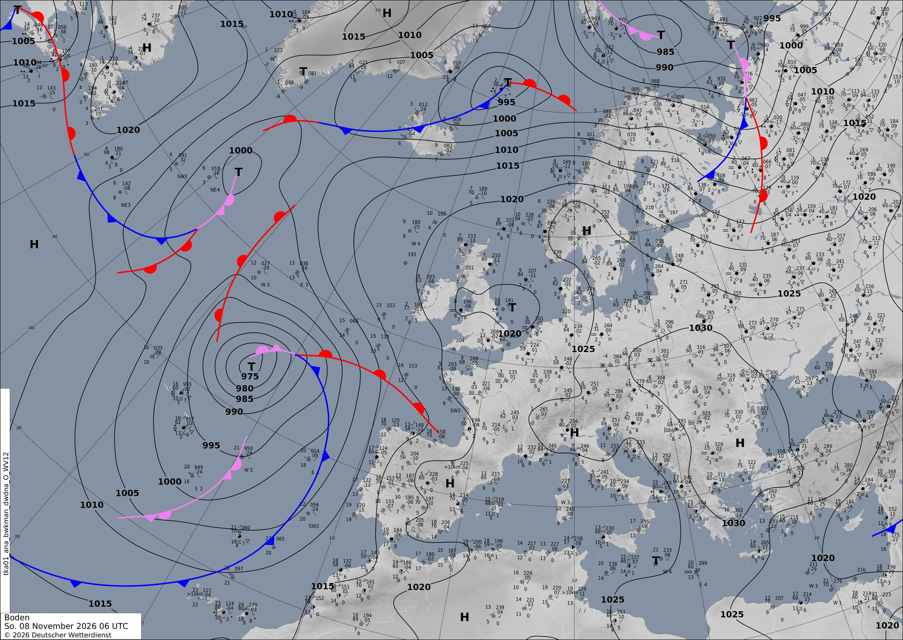

Una DANA atascada al oeste de Portugal trae lluvia, calor y tormentas
Una borrasca profunda con aire frío encima se ha quedado parada en el Atlántico, frente a la Península. Durante tres días nos manda aire templado del sur, frentes por el oeste y energía para tormentas en el Mediterráneo, mientras Francia pasa del frío seco a la lluvia.
Europa y el Atlántico
La protagonista de estos días está a las puertas de la Península. A las 00 UTC de hoy, domingo, había una borrasca de 976 hPa en pleno Atlántico, al oeste de Portugal. En el satélite de esta mañana se ve como una gran coma de nubes que se enrolla sobre sí misma. La carta de análisis del servicio alemán (DWD) de las 06 UTC la dibuja como una «T» de 975 hPa, con un frente ocluido enroscado en el centro y un frente cálido que llega hasta el golfo de Vizcaya (mira aquí).
Lo más interesante está arriba. En el mapa de 500 hPa, justo encima de la borrasca hay un círculo cerrado de aire frío, de 543 dam. Está separado de la corriente general del oeste, que pasa muy al norte, cerca de Islandia. Es una DANA con su borrasca debajo: forman una columna que gira sobre sí misma y, por eso, casi no se mueve. Al este, además, la presión es alta: un anticiclón de 1033 hPa sobre Rumanía y otro de 1028 hPa en el sur de Noruega le cierran el paso.
¿Cómo evoluciona?
- Mañana, lunes, la borrasca se ahonda hasta 971 hPa y sube un poco hacia el norte.
- Pasado mañana, martes, sigue en 972 hPa, a la altura de Galicia pero lejos de la costa.
- En la noche del martes al miércoles (+72 h) se va rellenando (979 hPa) y retrocede un poco hacia el este.
Por el flanco sur de la DANA sopla la corriente en chorro, cada vez más fuerte: 209 km/h al suroeste de Lisboa el lunes, 221 km/h el martes y 241 km/h el miércoles, ya apuntando al golfo de Cádiz. Ese chorro es la cinta transportadora que empuja los frentes y la humedad hacia la Península y Francia (mira aquí).
En el resto de Europa hay una pequeña bolsa fría en altura sobre Londres. Mañana se va al mar del Norte y deja un chorro de 212 km/h al sureste de los Alpes. El lunes caerán chubascos fuertes al oeste de Grecia (hasta 44 mm en 12 h). Al final del periodo el modelo forma una nueva borrasca de 996 hPa al norte de Canarias, con lluvias muy fuertes sobre el mar. A +72 h esa pieza es la más incierta: conviene volver a mirarla en las próximas pasadas.
En península ibérica y Baleares
La Península queda en la cara delantera de la DANA, la que mira al este. Allí el aire gira alrededor de la borrasca y llega del sur y del suroeste. Trae una masa de aire muy templada para noviembre: a 850 hPa (unos 1500 m) se alcanzan 17 °C. Por eso hoy, a mediodía, el punto más cálido del territorio ronda los 27,5 °C, y mañana lunes a mediodía llega a 29,8 °C. A medianoche refresca poco: lo más frío pasa de unos 2 °C la noche de hoy a unos 5 °C el miércoles.
La lluvia entra por el oeste con los frentes que giran alrededor de la borrasca. Hoy, hasta las 12 UTC, cae poco (6,7 mm como mucho). Esta tarde y esta noche ya hay puntos con 33 mm en 12 horas, y el lunes por la mañana, hasta 57 mm. El martes una banda deja hasta 40 mm en Portugal. En la noche del martes al miércoles, cuando el chorro apunta de lleno a la Península, el modelo pone hasta 64 mm en Extremadura (mira aquí). El aire húmedo que sube por las sierras del oeste refuerza esa lluvia. El viento medio llega a 50–60 km/h en las zonas más expuestas.
En Baleares la historia es otra: el Mediterráneo, todavía templado, calienta y humedece el aire de abajo. El martes el CAPE llega a 2016 J/kg sobre las islas, y sigue alto el miércoles (mira aquí). Es mucha energía para tormentas, aunque el CAPE solo indica que hay combustible: hace falta algo que haga subir el aire para que salten.
En Francia
Francia empieza la semana en otro mundo. Hoy está bajo el anticiclón centroeuropeo, con aire frío y seco: a 850 hPa la media es de solo 3 °C. A medianoche, en las cumbres de los Alpes, se llegó a −16 °C. Por encima pasa la corriente en chorro, con 225 km/h a mediodía, pero casi no llueve: como mucho 7 mm en 12 horas.
Desde mañana, lunes, el sur del país también recibe el viento del sur que manda la DANA. El aire templado sube por el valle del Ródano y a mediodía se alcanzan 22,8 °C en el sur. Al llegar desde el Mediterráneo, ese aire húmedo choca con las Cevenas y el este de los Pirineos y se ve obligado a subir. Ahí se concentra la lluvia: hasta 22 mm el lunes por la mañana, 42 mm en la noche del lunes al martes y 52 mm el martes por la mañana, con CAPE de hasta 1240 J/kg, es decir, con algo de tormenta (mira aquí). El viento llega a unos 45–50 km/h. La presión baja de forma general hasta unos 998 hPa en la noche del martes al miércoles.
París y alrededores. Hoy, domingo: 4–7 °C a medianoche y 9–10 °C a mediodía, seco, con presión alta (1024 hPa) y viento flojo (menos de 10 km/h). Lunes: más fresco, 3–4 °C a medianoche y 7–9 °C a mediodía; sigue seco y con viento flojo. Martes: el aire del sur llega a París. A medianoche ya hay 8,5–9,5 °C tras una noche con lluvia débil (hasta 3 mm), por la mañana caen otros 1,5 mm como mucho y a mediodía se alcanzan 12–13,5 °C. En la noche del martes al miércoles: 11,5–12,5 °C, solo alguna gota (0,5 mm), presión ya en 1004 hPa y viento algo más vivo, de hasta 15 km/h.
Lección del día: DANA (depresión aislada en niveles altos)
Hoy vamos a reconocer una DANA en el mapa de altura.
- Abre el mapa de 500 hPa a +0 h (mira aquí). Al oeste de Portugal verás varias isohipsas que se cierran en círculo. El valor más bajo, 543 dam, marca el centro de la bolsa fría.
- Busca ahora la corriente general del oeste: son las líneas casi rectas y muy juntas que pasan cerca de Islandia. El círculo queda muy al sur, aislado de ellas. Eso es lo que la convierte en DANA.
- Mira las isobaras: la borrasca de 976 hPa está justo debajo. Altura y superficie forman una sola columna.
- Avanza hasta +72 h (mira aquí). El círculo sigue casi en el mismo sitio, ahora con 540 dam y 979 hPa en superficie. Las DANA se mueven poco y, a menudo, de forma caprichosa.
- Para terminar, piensa en el giro, que va en sentido contrario a las agujas del reloj: ¿de dónde sopla el viento en su lado este? Del sur, hacia la Península. Por eso llegan el calor y la humedad.
Ponte a prueba
3 preguntas sobre el tiempo de hoy. Puedes mirar el mapa antes de contestar.
¿Por qué la borrasca del Atlántico apenas avanza hacia Europa en tres días?
¿Dónde hay más energía para tormentas el martes, según el mapa de CAPE?
¿Por qué sube la temperatura en París entre el domingo y el miércoles?
A 850 hPa, París pasa de cerca de 1 °C el domingo a unos 9 °C el miércoles, porque el aire del sur sube por delante de la DANA (mira aquí). Es un cambio de masa de aire.
La carta oficial
Análisis de superficie del servicio meteorológico alemán (DWD) válido el 08/11/2026 a las 06 UTC, dibujado por meteorólogos a partir de observaciones. Aquí sí hay frentes: azul con triángulos, frío; rojo con semicírculos, cálido; morado, ocluido. Las borrascas son T y los anticiclones H. Cómo leer esta carta.
